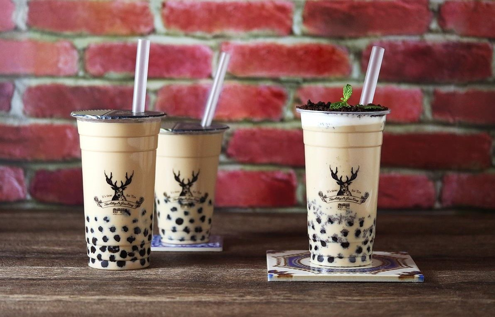

首頁 |
大腸包小腸 |
蚵仔煎 |
心得感想 |
珍珠奶茶

珍珠奶茶（Bubble tea, Pearl milk tea）簡稱珍奶，又稱粉圓奶茶（Tapioca (ball) tea）、波霸奶茶（B(P)oba milk tea），是一項於1980年代發明及廣傳於中華民國（臺灣）的茶類飲料，為泡沫紅茶（Bubble tea）、珍珠茶飲文化中的一支，將「粉圓」（「珍珠」，Tapioca ball）加入香醇的奶茶中，也尚有「珍珠紅（綠）茶」、「珍珠奶綠」等變種，由於口感特殊，所以受到廣大的歡迎與回響，也成為台灣最具代表性的飲料與小吃之一，多年來，已經由台灣流行至東亞、歐洲、美國甚至中東國家等地方。
粉圓（珍珠，波霸）的主要成份為澱粉，通常由太白粉，即木薯（樹薯，Cassava）的木（樹）薯粉（Tapioca），也有以地瓜粉、馬鈴薯粉等或果凍者所製成的直徑5～10 毫米的澱粉球，並添上水、糖及香料，其顏色、口感依成分不同而不同。